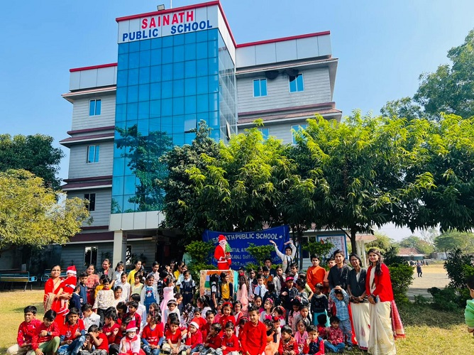

let's make every moment of Holi as bright and beautiful as the colors in the sky!
Schoology announcements (You will either have to turn on Notifications or check updates in Schoology feed regularly)

let's make every moment of Holi as bright and beautiful as the colors in the sky!
Schoology announcements (You will either have to turn on Notifications or check updates in Schoology feed regularly)
sports, scouts, art, theater, music, and community service Popular activities include sports, scouts, art, theater, music, and community service. Many children also join school-affiliated organizations (like student council), competitive
Join the Adventure (French Immersion) One subject area that has been totally transformed by technology is language learning. What a joy to be able to hear, see, and connect with other language leaners or speakers
Elimination Game The different types of co-curricular activities in school are chosen to